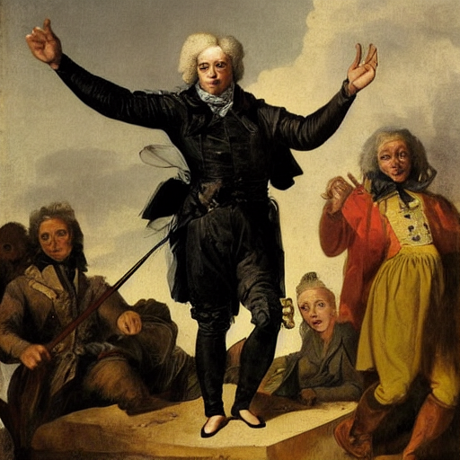

| id | annotations |
|---|---|
| 3 | Melancholie der Titelfigur mit einem posthistorischen Geschichtsverständnis in Verbindung zu setzen, dem zufolge noch revolutionäre Umsturzversuche in die ewige Wiederkehr des Gleichen münden |
| 8 | Spannung zwischen dem Versuch, die Revolution in die Bahnen vertrauter historischer Kontexte zurückzuführen und einem Verständnis der Revolution als konsequente Umwälzung und beispiellosen Neuanfang, |
| 9 | einerseits historische, andererseits mit der Historie brechende Revolution |
| 10 | Friedrich Schlegels apodiktische Subsumption der Französischen Revolution unter die „Tendenzen des Zeitalters |
| 12 | mit vierzigjähriger Verspätung entsteht ein Drama, das den Augenblick, in dem die Revolution ihre Kinder frisst, zum unmittelbaren Gegenstand hat |
| 14 | Lacroix zitiert also Lasource, oder genauer: Büchner legt Dantons Freund Worte in den Mund, die er einer seiner Hauptquellen für das Drama, dem Periodikum „Unsere Zeit“, entnimmt.6 Die Antwort des Volkes auf Lacroix’ Provokation besteht darin, seine revolutionär gemeinte Aussage als Zitat zu entlarven |
| 20 | Das authentische Zitat wählt sich einen fiktiven Kontext; die vorwärts gewandte Revolutionsrhetorik entstammt einem Archiv der Sentenzen und Phrasen |
| 27 | scharfen Kontrast zum Anspruch einer Revolution, die Gesellschaft radikal zu erneuern |
| 35 | politische Stoßrichtung von „Danton’s Tod“ mit Niehoff in der parodistischen Wiederholung der Phrasen der Revolutionsrhetorik – und also in der Kritik eines falschen Sprachgebrauchs durch dessen Zitierung |
| 42 | strukturelle Widerspruch, wie er zwischen dem revolutionären Aufbruch und der resignativen Einsicht in die ewige Wiederkehr allen Geschehens besteht |
| 44 | ist es die Revolutionsgeschichte selbst, die Danton den Elan zum Handeln nimmt |
| 45 | Dantons vermeintlich so revolutionäre Reden sind nur Zitate einer längst geprägten Rhetorik |
| 46 | dass Danton in seinen letzten politischen Reden nicht nur das Ende des revolutionären Terrors fordert, sondern sich bereits in der Gegenwart des Stücks nach der Revolution, am Ende ihrer Geschichte, befindet. |
| 47 | Das grammatische Futur wie das Messen der Zeit laufen leer, weil der revolutionäre Imperativ, Neues in die Welt zu setzen, vom Verlauf der Revolution selbst widerlegt wurde |
| 53 | politischen Parolen weniger aufeinanderprallen als unaufgelöst nebeneinander stehen, dann manifestiert sich deutlich, dass die Revolution in ein Stadium eingetreten ist, in dem anstelle neuer Visionen das Zitieren der alten Phrasen vorherrscht |
| 54 | In „Danton’s Tod“kommt die Revolution als sie selbst zu Wort – und stellt in dieser Zitierbarkeit ihre eigene Möglichkeit in Frage. Wo der Neuanfang schon einmal da gewesen, wo Dantons revolutionäre Rhetorik iterierbar ist, entzieht sich der Umsturz das Ziel, das er vorgibt. |
büchner: rezeption & langeweile
a georg buechner reception task
AVL
buechner
reception
a georg buechner reception task
reception
dokufiktion
im sinne pethes ist unter “rezeption” an dieser stelle eher buechners rezeption der konsultierten quellen, sein umgang selber damit, zu verstehen; weniger eine buechner-rezeption. er legt dar, wie buechner zu seiner zeit die dokumente einzubetten gelingt, vielleicht schon ganz im stil einer heute so verstandenen “dokufiktion”, die mit den mitteln authentischer bis fiktionaler dokumentation von zeitgeschehen arbeitet und dabei ihren reiz daraus zieht, dasz neben der bloszen aufzählung von fakten oder gegebenheiten diese mal mehr oder weniger literarisch verwandelt werden dh. unterhaltsam. beispiele davon sehen wir (seminar dokufiktion Brüggemann, WS25) zb. bei Margerite Duras, W.G. Sebald und anderen.

repetition
buechner hat hier (in Danton, Lenz, Woyzeck) eine quelleninterpretation gewählt, die es ihm erlaubt, die historischen (damals schon) dokumente in seinem werk auch auf der metaebene einzusetzen, zb. um aussagen seiner protagonisten mittels derselben zu relativieren. so wird im danton die “langeweile”, die die ausführungen der revolutionsführer beim publikum (dem volk) auslösen in Pethes (2006) als eintrag buechners zur historizität der - bzw. jeglicher - revolutionsbestrebungen verstanden, (QA: Table 1). die geschichte, an der festgestellt wird, dasz sie sich fortwährend - stets an anderen protagonisten - wiederholt, schafft beständig selbst gründe für ihre aufhebung. nichts soll ernstgenommen werden, da es in der zukunft hinfällig ist. keine glaubensgrundsätze, ideologien, überzeugungen halten dem nächsten paradigmenwechsel stand. und an dieser stelle tritt auch die melancholia auf…
melancholie…
zieht sich durch das werk buechners (QA: Table 2) und das motiv wird hier von pethes immer wieder mit langeweile in verbindung gebracht: die figuren werden melancholisch (gezeichnet oder bezeichnen sich z.t. selbst so) aus der empfindung einer langeweile heraus, die ihre aktivität hemmt.1 auch ohnmacht gegenüber den schicksalsläuften wird hier eine rolle spielen: die ausweglosigkeit, einem einmal begonnenen verlauf zu entrinnen, den man u.u. (wie danton) selbst zu verantworten hat - was die verzweiflung/melancholie unendlich werden lassen mag.
| id | annotations |
|---|---|
| 3 | Melancholie der Titelfigur mit einem posthistorischen Geschichtsverständnis in Verbindung zu setzen, dem zufolge noch revolutionäre Umsturzversuche in die ewige Wiederkehr des Gleichen münden |
| 28 | Die Langeweile ist aber zweitens auch ein zentraler Topos in Büchners übrigem Werk, in dem immer wieder Melancholiker auftreten, die ihren Daseinsüberdruss an der, mit Nietzsche gesprochen, „ewigen Wiederkehr des Gleichen“ festmachen. |
| 29 | Diese Melancholie ist aber, so werde ich zu zeigen versuchen, weniger eine individualpsychologische Pathologie als der Spiegel einer neuen Relation zwischen Individuum und Geschichte |
| 30 | Zitationstechnik seines Autors mit der Geschichtsmelancholie seines Protagonisten. |
| 36 | schließt dieser Topos der Langeweile nicht nur, wie in der Forschung mehrfach kommentiert, an das aus dem 18. Jahrhundert ererbte, gleichermaßen medizinische wie literarische Bild der Melancholie an. |
| 38 | scheint dieses Motiv allerdings durchaus der melancholischen Verfassung der betreffenden Figuren zugehörig. So, wenn der Hauptmann im „Woyzeck“ pseudophilosophische Reflexionen über die Unmöglichkeit, die endlos dahinfließende Zeit sinnvoll zu füllen, anstellt |
| 39 | Bezug zwischen Melancholie und Langeweile ausdrücklich gestiftet, |
| 40 | Zitat ist Melancholie. Diese Lesart, der zufolge die existentielle Langeweile, der die Figuren bei Büchner immer wieder Ausdruck verleihen, der Wiederkehr von bereits Geschehenem und der Wiederholung von bereits Gesagtem geschuldet ist |
| 59 | Dass alles schon einmal da war und langweilig ist, ist am Ende weder eine Provokation des Volks, noch die Melancholie Dantons – und auch nicht eine etwaige Resignation Georg Büchners. Es ist ein literarisches Verfahren, das dem Bruch in der Struktur der Geschichte selbst gerecht zu werden vermag |
References
Büchner, Georg. 1879. Georg Büchner’s Sämmtliche Werke Und Handschriftlicher Nachlaß. 1. krit. Gesammt-Ausg. Frankfurt am Main: Sauerländer.
———. 1922. Georg Büchners Sämtliche Werke Und Briefe. Leipzig : Insel Verlag. http://archive.org/details/georgbchnerss00bcuoft.
Müller, Harro. 1994. “Theater Als Geschichte – Geschichte Als Theater. Büchners Danton’s Tod.” In Giftpfeile. Zur Theorie Und Literatur Der Moderne, 169–84. Bielefeld: Aisthesis.
Pethes, Nicolas. 2006. “’Das War Schon Einmal Da! Wie Langweilig!’ Die Melancholie Des Zitierens in Georg Büchners Dokumentarischer Poetik.” Zeitschrift Für Deutsche Philologie 125 (4): 518–35. http://www.uni-koeln.de/.
Footnotes
was sich wunderbar in das heutige akzeptierte diagnoseschema der depression fügt↩︎